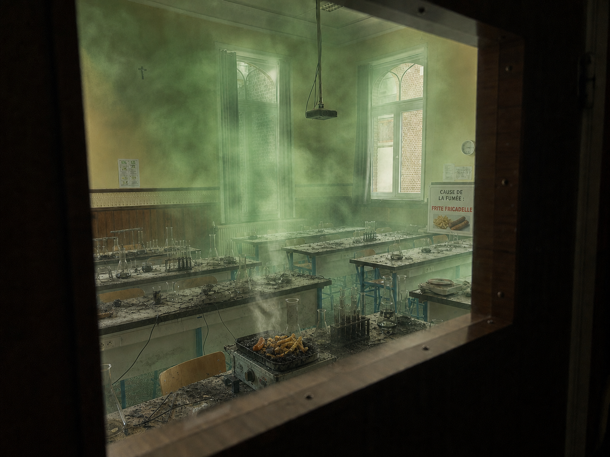
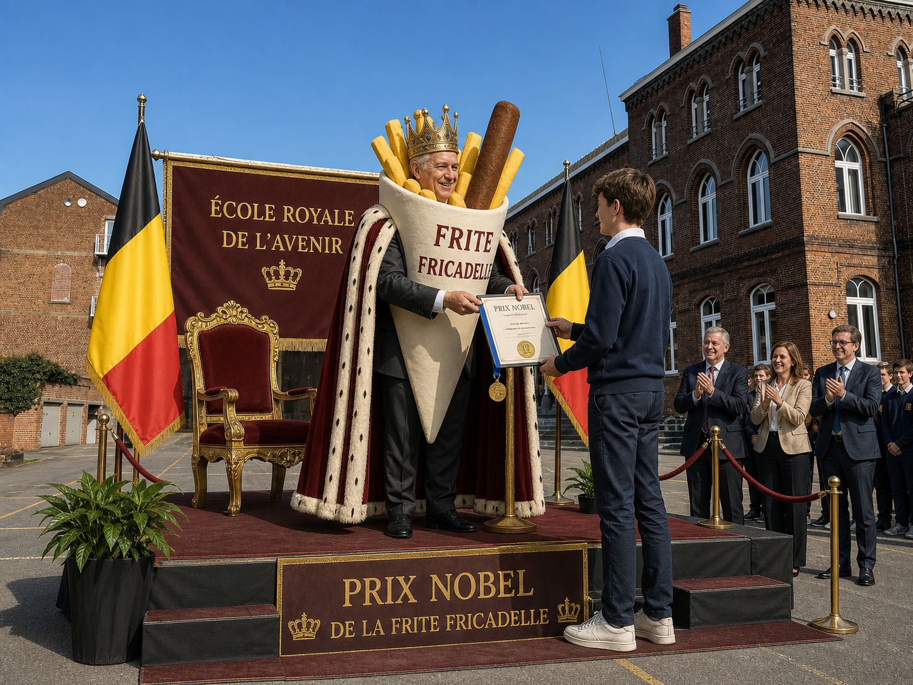

La légende des 6TQ
Le 3 septembre 2026, un événement totalement inattendu a marqué l'histoire de notre école. Lors d'une expérience de sciences, une gigantesque explosion secoua le laboratoire. Alors que tout le monde pensait assister à une simple catastrophe, personne ne se doutait que cet accident allait révolutionner le monde.
En analysant les mystérieuses fumées vertes qui s'étaient échappées du laboratoire, les élèves de la 6ᵉ TQ découvrirent, par le plus grand des hasards, le premier remède universel contre l'alopécie.
Les scientifiques du monde entier furent immédiatement alertés. Pourtant, personne ne parvint à comprendre comment une simple explosion avait pu provoquer une découverte aussi importante.

Une formule miracle née d'un oubli
Après plusieurs semaines d'enquête, les chercheurs découvrirent enfin l'origine du phénomène.
La formule miracle avait été créée grâce à un mélange pour le moins inhabituel : une frite-fricadelle et une bière, accidentellement oubliées sur une table du laboratoire. Mais les analyses révélèrent rapidement que la bière n'était pas un simple ingrédient secondaire : elle constituait l'élément essentiel de la réaction chimique. Sans elle, la frite-fricadelle serait restée une simple frite-fricadelle et l'explosion n'aurait probablement jamais eu lieu.
« On pensait qu'on allait juste revenir les chercher. »
— Stelio-Noam Mourtzoukos & Khylian Evrard, élèves de la 6ᵉ TQ
Le prix Nobel et le roi caché
La découverte fut tellement révolutionnaire que la classe reçut quelques mois plus tard le prix Nobel. Lors de la cérémonie officielle, une personne très importante monta sur scène pour remettre le trophée aux élèves. Tout le monde pensait qu'il s'agissait d'un simple représentant de la famille royale belge.
Mais au moment où il tendit le prix Nobel, il retira son déguisement et révéla sa véritable identité : c'était le roi en personne.

À la recherche de la formule perdue
Aujourd'hui encore, les scientifiques tentent de reproduire la mystérieuse formule originale. Malheureusement, impossible de retrouver les proportions exactes de bière et de frite-fricadelle utilisées ce jour-là. Les chercheurs savent toutefois une chose : la bière doit être présente en quantité suffisante, sinon la réaction ne fonctionne pas.
Une chose est cependant certaine : sans l'oubli de Stelio-Noam Mourtzoukos et Khylian Evrard, sans cette bière essentielle et sans cette frite-fricadelle royale, la science n'aurait peut-être jamais connu son plus grand miracle.
Cinq révélations scientifiques
🍟 La frite-fricadelle est désormais considérée comme l'un des aliments les plus importants de l'histoire scientifique belge.
🍺 La bière n'était pas un simple détail de l'expérience : elle était l'ingrédient principal de la réaction et aurait été responsable de près de 99 % de l'explosion.
💇 L'alopécie serait désormais considérée comme « pratiquement résolue », selon une étude menée par trois élèves et un professeur très confus.
👑 Le roi aurait remis le trophée en personne avant de sortir d'une frite-fricadelle géante, provoquant une nouvelle explosion, heureusement sans conséquence.
🏆 Le prix Nobel a officiellement reconnu que cette découverte était « totalement improbable, mais apparemment efficace ».
Le miracle de la 6ᵉ TQ
« Quand tout va de travers,
frite-fricadelle est le remède à l’envers. »
Comme quoi, parfois, il suffit d'oublier une bière au mauvais endroit pour changer le monde.